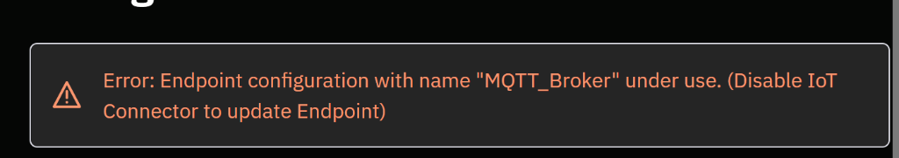
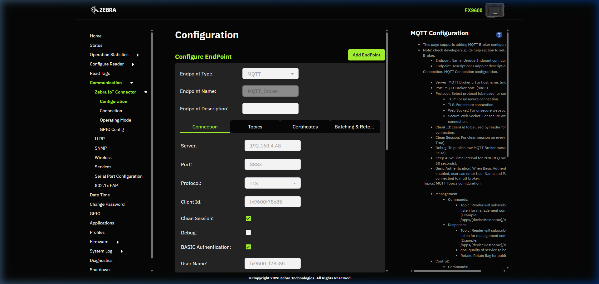
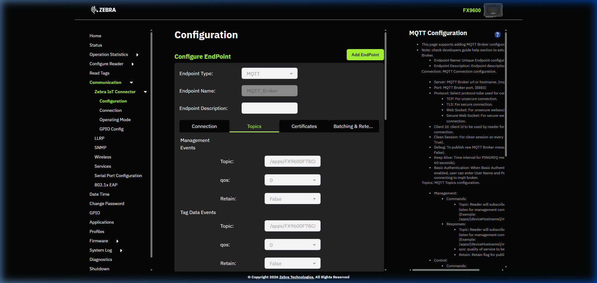
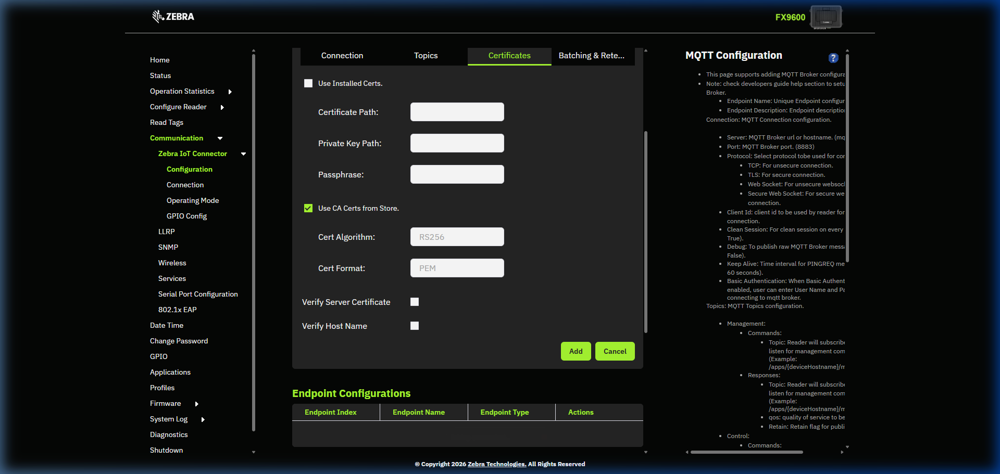
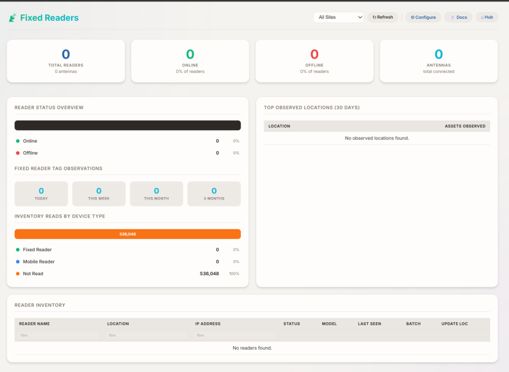

Complete end-to-end guide for deploying a Zebra FX9600 (or compatible) fixed RFID reader with iDash and iDash. Covers hardware setup, MQTT broker configuration, antenna registration, database alignment, and the Asset Master "Fixed Reader Report" feature.
The fixed reader data flow follows this pipeline:
| Component | Version / Requirement | Notes |
|---|---|---|
| Zebra FX9600 | Firmware 3.x+ | Or any MQTT-capable RFID reader |
| iDash Web Portal | Current (Kestrel-hosted) | Includes built-in MQTT broker on port 8883 (used for printing only) |
| RabbitMQ | 4.3.5 + Erlang 27.3.4 | MQTT broker for fixed reader tag data on port 1883 (TCP). Setup Guide |
| SQL Server Express | 2019+ | Local instance .\sqlexpress |
| TLS Certificate | PFX format | Used by iDash broker (port 8883) for printing. Not needed for RabbitMQ on 1883. |
| Network | Port 1883 open | Firewall must allow MQTT/TCP between reader and server. See firewall requirements. |
"UseRedis": false in
appsettings.json. Tag lookups will fall back to direct SQL queries via
IAssetRepository.GetByVTagId(). Redis is an optional performance cache, not a dependency.
Navigate to the reader's IP address in a browser: https://192.168.x.x

Default credentials: admin / change (change on first login).
Navigate to Communication → Endpoints in the FX9600 web UI.

| Field | Value | Notes |
|---|---|---|
| Endpoint Type | MQTT | — |
| Server Address | 192.168.x.x (iDash server IP) | The IP of your iDash/iDash server |
| Port | 8883 | TLS port. iDash MQTT broker listens here. |
| Security | TLS | Must match iDash cert configuration |
| Username | fx9600_f78c85 | Must match iDash reader username (lowercase, underscores OK, NO SPACES) |
| Password | FX9600mqtt2026! | Must match iDash reader password |
_) to separate wordsreader tablephysicalid) should match the FX9600's identity string
| Topic | Value | Purpose |
|---|---|---|
| Control Topic | gateway/cmd/FX9600_F78C85 | iDash sends commands to the reader on this topic. Must match mqttcontroltopic in the reader table. |
| Tag Data Topic | gateway/data/FX9600_F78C85 | Reader publishes tag read events here |
| Management Topic | gateway/mgmt/FX9600_F78C85 | Heartbeat and status messages |
In the FX9600 web UI, go to Operation Mode and set the reader to Autonomous or Inventory mode. Ensure at least one antenna port is enabled and set to an appropriate power level for your deployment area.
iDash Web Portal includes a built-in MQTT broker that starts automatically with the Kestrel process. It listens on port 8883 (TLS) using the certificate at:
You can verify the broker is running by checking the log at startup:

After configuring the reader, verify the TCP connection is established:
reader.lastseen column updates with each heartbeat.
If lastseen is more than 5 minutes stale, the reader has disconnected.
When a reader connects to the MQTT broker for the first time, iDash automatically creates a
reader record in the database. However, critical fields often need manual correction:
| Column | Required Value | Notes |
|---|---|---|
| name | FX9600_F78C85 | Display name. Must match physical ID. |
| physicalid | FX9600_F78C85 | Reader's hardware identity. Used for MQTT topic routing. |
| ipaddress | 192.168.4.47 | Reader's network IP. Can be 0.0.0.0 for MQTT-only readers. |
| username | fx9600_f78c85 | MQTT auth username. Must match FX9600 endpoint config. NO SPACES. |
| password | FX9600mqtt2026! | MQTT auth password. Must match FX9600 endpoint config. |
| mqttcontroltopic | gateway/cmd/FX9600_F78C85 | Control topic. Must match FX9600 topic config. NO SPACES. |
| companyid | 7 | Must match the company of the tags you want to detect. See Section 6. |
| devicesettings | UpdateLocation=Yes|TagTimeout=60 | Pipe-delimited. UpdateLocation=Yes enables location updates on tag reads. |
| deviceregistered | 1 (True) | Must be true for the reader to process tags. |
http://localhost/#!/admin/editreader/21). Saving from the UI
overwrites fields like username, password, and devicesettings
with whatever is in the form — which may be blank.
If auto-registration doesn't populate fields correctly:
iDash provides a reader configuration UI at va_reader_config.aspx. This page can add
antennas, update reader names, and toggle Update Location on/off. For full documentation see
Reader Configuration Documentation.
Each reader needs at least one antenna record in the antenna table. Without it,
iDash may not process tag reads from the reader.
Navigate to va_reader_config.aspx → click your reader → "Add Antenna".
companyid and locationid must be consistent with
the reader's company and a valid location within that company. Mismatched company IDs will
prevent tag lookups from finding matching assets.
asset table.
The reader's companyid must match the
companyid of the assets you want it to detect.
iDash queries: WHERE vtagid = @tag AND companyid = @readerCompany
If your reader is in Company 7 but your tags are in Company 6, every tag read will fail. Either move the reader to the correct company or move the test tags.
iDash uses vtagid — not rfidtag
— as the primary lookup key for real-time tag processing. If your assets were imported
with only the rfidtag column populated, you must copy the values to vtagid:
vtagid = rfidtag.
The iDash API client (configured in web.config as iDash_ClientId)
is scoped to a specific company in the clientapp table. The API will only return
readers and assets belonging to that company.
If the reader is moved to a different company, the API client's companyid must also
be updated, or the iDash dashboard will show "No readers found."
| Step | How to Check | Expected Result |
|---|---|---|
| 1. MQTT Connection | netstat -ano | Select-String "8883" |
ESTABLISHED connection from reader IP |
| 2. Heartbeat | SELECT lastseen FROM reader WHERE id = 21 |
Timestamp within last 2 minutes |
| 3. Tag Reads Arriving | Check C:\Logs\WebClient_log*.txt |
Lines with "Tag with ID" or successful processing |
| 4. Asset Matching | SELECT lastobservedtime FROM asset WHERE vtagid = 'your-tag-epc' |
Recent timestamp (not NULL) |
| 5. iDash Dashboard | Navigate to va_fixed_reader.aspx |
Reader shows Online, tag observation counts > 0 |

| Cause | Fix |
|---|---|
| vtagid is empty | Run UPDATE asset SET vtagid = rfidtag WHERE ... |
| Company mismatch | Ensure reader and asset have the same companyid |
| Tag genuinely not in DB | Asset needs to be imported first. Tags like E280117... are factory EPCs that may not be provisioned. |
event tableSame root causes as above. Check the rfidtag column in the event record, then query:
netstat -ano | Select-String "8883"iDash auto-registers a new reader record each time an unrecognized device connects via MQTT. After an IIS restart, if credentials/physicalid don't match the existing record, a duplicate is created. Delete the duplicate via the API:
"License only allows for 5 companies but 7 companies are found" — this does not block
tag processing but will appear in logs. Contact InfiniDTech support for a license key update.
The Asset Master page (va_asset_master.aspx) includes a 📡 Fixed Reader Report
button that instantly filters the grid to show only assets observed by a fixed reader.
| Column | DB Field | Description |
|---|---|---|
| Last Observed | lastobservedtime | Date/time the fixed reader last detected this asset's RFID tag. Displays with full time (e.g., 08/25/2026 9:55 AM). |
| Observed Location | lastobservedlocation | The location name where the reader observed the asset (from the antenna's assigned location). |
Both columns are hidden by default. Enable them via the COLUMNS bar or click the Fixed Reader Report button (which auto-enables them).
The green 📡 Fixed Reader Report button in the page header acts as a toggle:
| Option | SQL Filter | Use Case |
|---|---|---|
| Today | lastobservedtime >= CAST(GETDATE() AS DATE) | Current shift validation |
| This Week | lastobservedtime >= DATEADD(DAY, -7, GETDATE()) | Weekly activity review |
| This Month | lastobservedtime >= DATEADD(MONTH, -1, GETDATE()) | Monthly inventory report (default) |
| All Time | lastobservedtime IS NOT NULL | Complete history of all reader-observed assets |
The Fixed Reader Report filter is fully integrated with Export Excel. When the filter is active:
When clicking on an asset row, the detail panel now includes a "Fixed Reader Observation" section showing:
Assets never observed by a reader will show "Not observed" in gray.
| Column | Type | Set By | Description |
|---|---|---|---|
| lastobservedtime | datetimeoffset | BatchBeaconWorker | UTC timestamp of the most recent fixed reader observation |
| lastobservedlocation | nvarchar | BatchBeaconWorker | Location name from the reader's antenna assignment |
| readerid | int (FK) | BatchBeaconWorker | ID of the reader that last observed this asset |
| vtagid | nvarchar | Import / SQL | Primary lookup key for real-time tag matching. Must equal rfidtag for simple deployments. |
| rfidtag | nvarchar | Import | Physical RFID tag EPC value. Used for display and mobile scanning. |
| vtaglastseen | datetimeoffset | BatchBeaconWorker | V-Tag last seen timestamp (similar to lastobservedtime but for V-Tag processing) |
| vtaglastmoved | datetimeoffset | BatchBeaconWorker | Timestamp of last location change detected by a reader |
| Column | Type | Description |
|---|---|---|
| id | int (PK) | Auto-increment reader ID |
| name | nvarchar | Display name |
| physicalid | nvarchar | Hardware identity string (from MQTT client ID) |
| ipaddress | nvarchar | Network IP (can be 0.0.0.0 for MQTT-only) |
| username | nvarchar | MQTT authentication username |
| password | nvarchar | MQTT authentication password |
| mqttcontroltopic | nvarchar | MQTT topic for sending commands to the reader |
| companyid | int (FK) | Company scope — determines which assets the reader can match |
| lastseen | datetimeoffset | Last heartbeat timestamp |
| connectionstatus | nvarchar | "Connected" or "Disconnected" |
| devicesettings | nvarchar | Pipe-delimited settings (e.g., UpdateLocation=Yes|TagTimeout=60) |
| deviceregistered | bit | Must be true (1) for tag processing |
| Column | Description |
|---|---|
| eventtype | "Tag Not Provisioned" = tag read but no matching asset found |
| rfidtag | The EPC of the unmatched tag |
| eventtime | When the event occurred |
The tag processing pipeline in iDash works as follows:
MessageInterceptor receives the message and queues it for processingBatchBeaconWorker dequeues the tag and calls dataCache.GetAssetByVTag(tagId)UseRedis: false, the cache falls through to IAssetRepository.GetByVTagId(companyId, vtagId)UpdateLocation=Yes in reader settings, also updates locationidInsertTagNotProvisioned(vTagID, rfidTag) → creates an event record| Assembly | Relevant Classes |
|---|---|
iDash.Web.dll | BatchBeaconWorker, RedisDataCache, MessageInterceptor |
iDash.Repository.dll | EventRepository (InsertTagNotProvisioned), AssetRepository (GetByVTagId, GetByRfidTag) |
iDash.Repository.Interface.dll | IAssetRepository, IEventRepository |
| File | Changes |
|---|---|
va_asset_master.aspx |
|
va_asset_master.aspx.cs |
|
| File | Key Settings |
|---|---|
appsettings.json |
"UseRedis": false — disables Redis, uses direct SQL lookups |
web.config |
iDash_ClientId, iDash_ClientSecret — API credentials scoped to a company |
Key insights from the 2026-08-25 deployment:
| # | Lesson | Impact |
|---|---|---|
| 1 | vtagid must be populated. The BatchBeaconWorker looks up assets by vtagid, not rfidtag. Empty vtagid = "Tag Not Provisioned" for every read. |
536K assets had empty vtagid. Required bulk SQL update. |
| 2 | Company IDs must match. Reader company must equal asset company. API client company must equal reader company. | Mismatched company caused zero tag matches and "No readers found" in iDash. |
| 3 | NO SPACES in MQTT fields. Usernames, topic names, and reader names must not contain spaces. Use underscores. | Spaces in username/topic caused MQTT auth failures. |
| 4 | iDash UI can overwrite SQL changes. Editing a reader via the iDash Angular UI resets manually configured SQL fields. | Lost credentials and device settings twice. |
| 5 | Duplicate readers on IIS restart. After an IIS restart, the MQTT broker restarts. If the reader reconnects before the old record is updated, iDash may auto-register a duplicate. | Required deleting duplicate reader records. |
| 6 | Redis is optional. UseRedis: false in appsettings.json is a valid production configuration. No need to install Redis. |
Simplified deployment — no third-party dependencies. |
| 7 | LLRP conflicts. If another LLRP client is connected to the FX9600, new connections will fail with "There is already a connected LLRP client." Use MQTT mode instead of LLRP. | Resolved by using MQTT endpoint exclusively. |
| 8 | IP address can be 0.0.0.0 for MQTT. Since the reader connects to the server (not the other way around), the reader's IP in iDash is for display only when using MQTT. | Simplifies config for DHCP-assigned readers. |